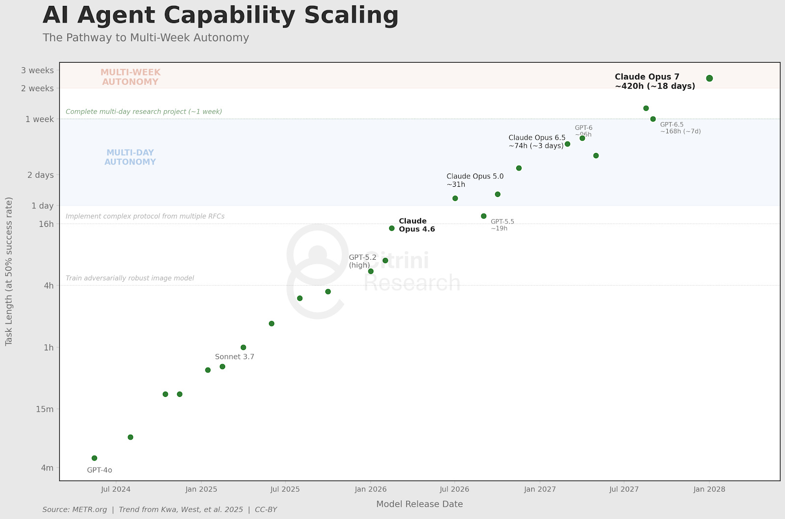

There was a popular blog post about some economic ramifications of continued AI progress. It included a projection of METR time horizons:
{kind=link}

Claude Opus 4.6 is a real model. Beyond that is the authors' scenario. So, we see the doubling time increase dramatically from today on. This is in line with an observation I have made: people seem uncomfortable ever supposing that AI progress is as quick as the data suggests it to be. Rather than imagining a scenario in which AI progress speeds up (which would be a useful scenario to explore when trying to investigate the possible ramifications of AI progress), they choose to imagine an immediate slow-down (with no acknowledgement of this fact in the post, nor justification), which seems counterpoised to the goal of investigating the ramifications of continued AI progress. People are afraid of change; when considering it, they retreat to a scenario in which it is a little softer, a little less frightening.
Considering a scenario a little softer than the existing trend implies will actually be the case is OK. The authors state clearly that what they are laying out is merely a scenario to consider rather than a prediction. But in this case it's not that simple. Let me explain why.
However, first let me make an observation. The most common criticism I saw of the post was that the pace of AI progress it predicted was too quick. There were issues with the post in that direction related to diffusion of the technology, but outside of Zvi pointing out that "uh… we would obviously be getting a technological singularity by this point" (paraphrasing), I didn't see anyone pointing out that what was actually being portrayed was a large slowdown.
And the large slowdown is occurring exactly when one would expect a speed up. Constant are the reports, post Opus 4.6, of developers who up until this point have been doubtful of the utility of AI in programming exclaiming that now, with Opus 4.6, AI tools have finally reached the point where they are providing an unmistakable uplift. Scarce are reports of people who have tried Opus 4.6 and not experienced such an uplift. This wave really started with Opus 4.5, but has become much more pronounced post-4.6. In very deed, METR, who conducted an uplift study in early 2025 which found that AI tools slowed developers down by about 20%, also conducted a follow-up study in late 2025 (pre-Opus 4.6, but partially post-Opus 4.5) which found a developer uplift of 5%–20% (roughly speaking, please just read their report). So, upon reading METR's recent report, and hearing a flood of anecdotal evidence, and observing first-hand the utility of these models, and extrapolating from certain benchmark performances and existing trends, one finds it becomes quite clear that we are now seeing real, general uplift of programming productivity from SOTA AI models.
To quantify this somewhat precisely, programming uplift from Opus 4.6 in Claude code is likely around 20%. Dario Amodei estimated that engineers at Anthropic are seeing an uplift of 15%–20%, and something at the higher range of METR's estimate seems fair given that their study was conducted with previous-generation models and because METR's report outlined that their estimates were likely something of a lower bound rather than a measurement of uplift precisely. Further, it seems likely that uplift will grow exponentially with a similar (smaller) doubling time to time horizon. I reached this conclusion from principles: automating long tasks is much more valuable than automating short tasks and the 'universal' unlocks become greater with time; and the data (so far very limited) have borne it out (Amodei's estimate of productivity was 5% in September (IIRC?) and 20% recently, for a doubling time of ~3 months).
So, with developer uplift having now become quite noticeable (already ~20% as of Feb 5 (Opus 4.6's date of release)), and more-than-doubling every three months, should we expect AI progress over the next couple years to speed up, or to slow down? Maybe one acknowledges that AI researcher productivity will increase, but will be outweighed by compute constraints, or by RLVR hitting a wall. But at least for 2026, compute will continue coming online along the same trend seen in previous years. And all reports from AI labs are that they see RLVR continuing to scale many, many more orders of magnitude. Another objection is that perhaps algorithmic progress is a small factor in time horizon doubling time and what really matters most is just compute, or doing full training runs and learning from the results, processes which can't really be sped up that much by increasing uplift. Seems unlikely, but a worthy objection which I should dedicate a post to addressing.
The implications really are stark. You don't have to extrapolate far to see developer productivity uplifted by several hundred percent, nor to see developers being taken out of the picture entirely. Extrapolate just a little further, and you see an intelligence explosion, fast takeoff. This is not a secret; the masses are just too allergic to frightening truth for the apparent proximity of this possibility to diffuse through the population; but the labs are not hiding this fact, they are shouting it for all to hear, and their already-dramatic predictions of three months ago (OpenAI stream on the future of OpenAI, "country of geniuses in a datacenter") have apparently been ramped up much further, even, now (Sam Altman on takeoff sooner than expected, Anthropic on developer obsolescence in 6–12 months).
So, this graph isn't just going against existing trends, it's counterpoised to the apparent implications of the inflection point on whose beginning area we sit; it's counterpoised to the every statement of frontier AI labs; it's a fantastic scenario. The post, which crashed US stocks, doesn't need even to be engaged with further than this. Market participants, please, in the future move on jimfund posts, sure, but not on fantastic scenarios in which the pace of AI progress slows down rather than speeds up in the near term.